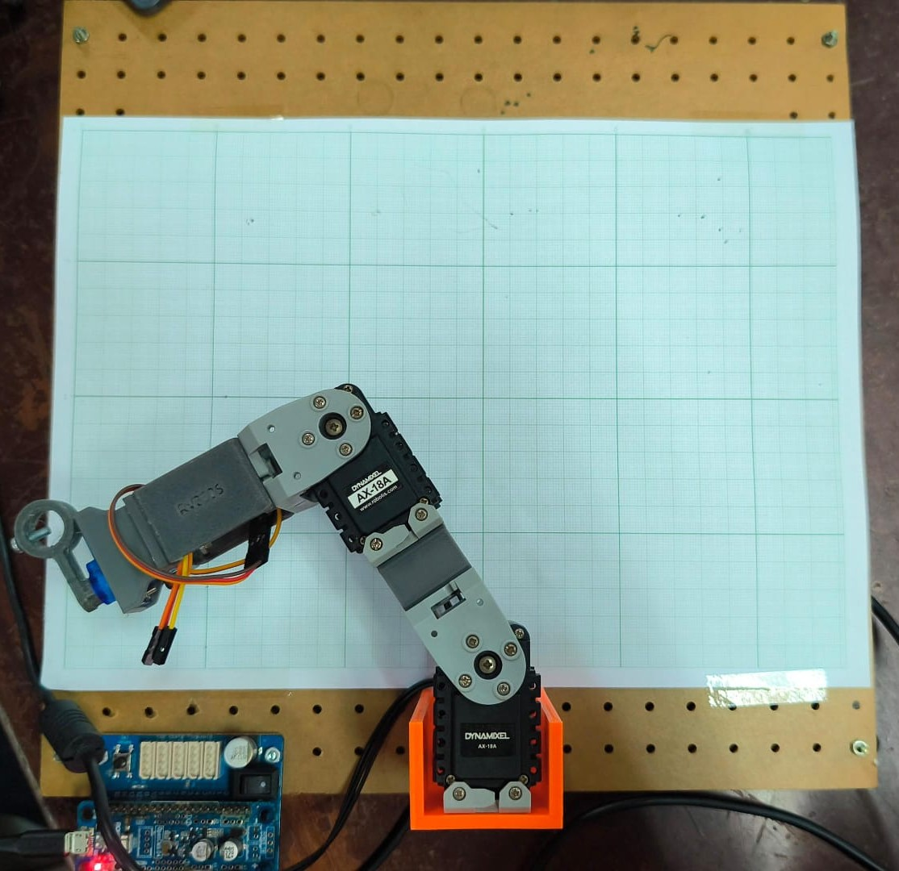
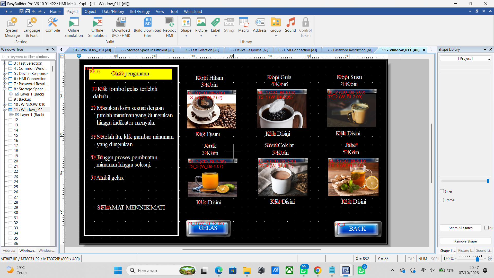
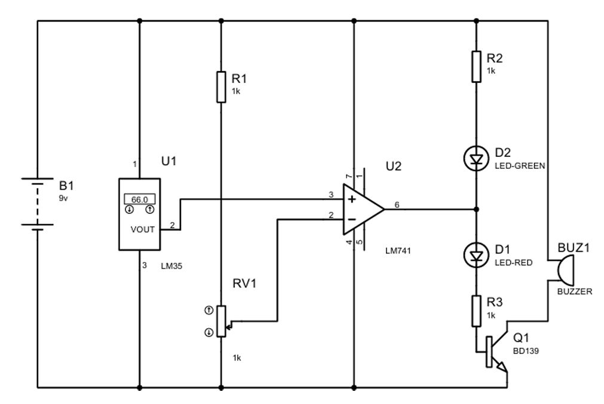
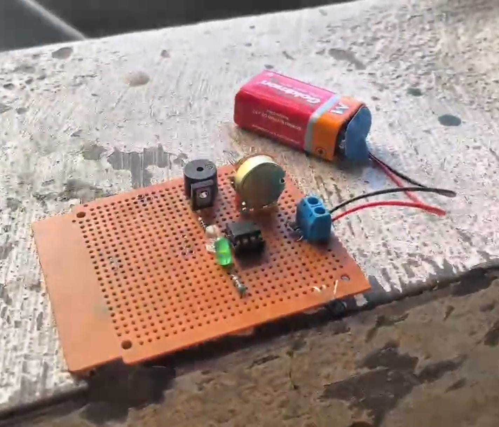
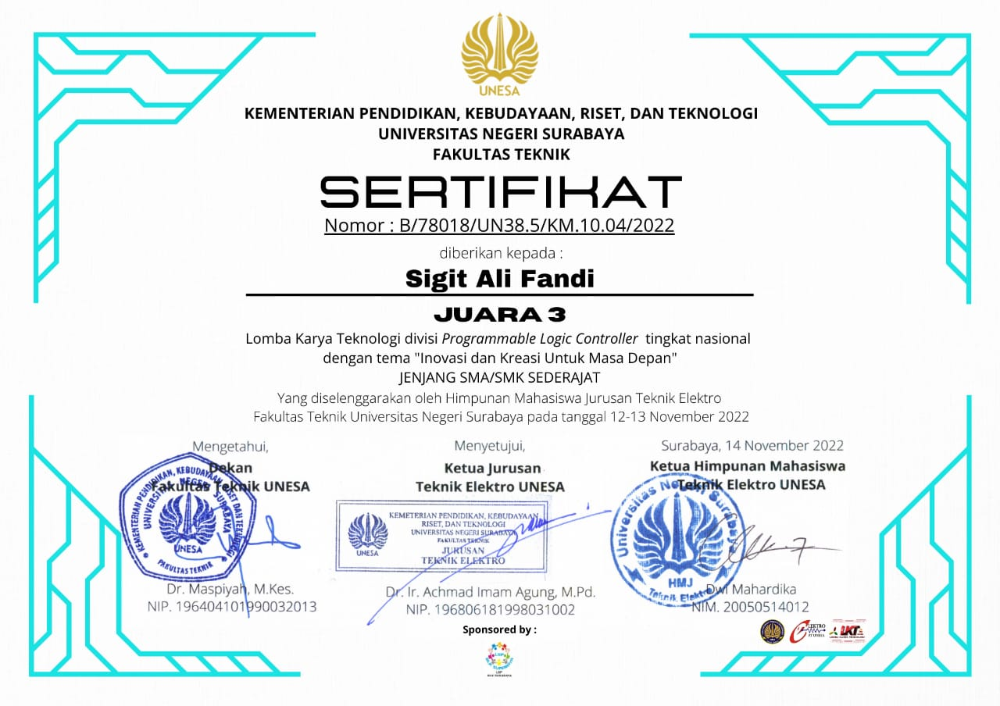

SIGIT ALI FANDI
Mahasiswa D4 Teknik Mekatronika | Embedded Systems, Automation & Robotics
 Robotics • Control
Robotics • Control
Self-Balancing Robot
Robot beroda dua yang mampu menyeimbangkan diri secara otomatis dengan prinsip inverted pendulum. Sudut kemiringan dibaca oleh sensor IMU MPU6050, lalu diolah oleh kontrol PID pada ESP32 untuk mengatur motor melalui driver L298N. Sasis akrilik dirancang dalam 3D sebelum dibuat.

Eksplorasi Kinematika2-DOF Planar Robot Arm Kinematics
Mengembangkan program C++ menggunakan board OpenCM9.04 dan servo Dynamixel untuk menghitung Forward dan Inverse Kinematics, sehingga lengan robot dapat menggambar lintasan yang telah ditentukan.

HMI AutomationHMI Touchscreen Design for Automatic Coffee Vending Machine
Merancang antarmuka Human Machine Interface (HMI) menggunakan perangkat lunak EasyBuilder Pro untuk mengoperasikan mesin kopi otomatis. Desain mencakup halaman menu pilihan minuman, instruksi penggunaan, hingga simulasi proses pembuatan minuman berbasis koin secara interaktif.


Sistem Alarm Suhu Berbasis LM35
Merancang rangkaian kontrol analog terintegrasi untuk sistem peringatan dini suhu berlebih (overheat). Menggunakan sensor LM35 untuk pembacaan suhu dan op-amp LM741 untuk pengaturan set-point, lengkap dengan jalur PCB hasil desain mandiri.
 Mechanical Design
Mechanical Design
Mesin CNC Pen Plotter
Mengaplikasikan hasil desain konseptual 3D ke dalam proses manufaktur perangkat keras. Fokus pengerjaan mencakup fabrikasi struktur mekanik, penyelarasan sasis, dan perakitan komponen pergerakan presisi (motor stepper & rel linear).
Juara 3 Lomba Karya Teknologi Nasional (UNESA 2022)
Meraih Juara 3 dalam Lomba Karya Teknologi divisi Programmable Logic Controller tingkat nasional dengan tema "Inovasi dan Kreasi Untuk Masa Depan" Jenjang SMA/SMK Sederajat.

Sertifikat Kompetensi LSP P3 (Pengoperasian Peralatan Elektronika Berbasis PLC)
Sertifikat keahlian profesi dan uji kompetensi di bidang pengoperasian peralatan elektronika berbasis Programmable Logic Controller (PLC) berlisensi BNSP.

Program Pelatihan Digital Expertise (DEX) 2026
Telah menyelesaikan serangkaian program sertifikasi kompetensi digital praktis di bidang rekayasa perangkat IoT dan administrasi jaringan komputer.
 - DEX - Politeknik Elektronika Negeri Surabaya_Hal1.jpg)


Latihan Keterampilan Manajemen Mahasiswa (LKMM) PENS
Telah menyelesaikan pelatihan manajemen dan kepemimpinan tingkat Pra-Dasar (2024) dan tingkat Dasar (2025).


Workshop Electro PLC Competition (WEPC) 2024
Berpartisipasi aktif sebagai peserta dalam kompetisi pemrograman Programmable Logic Controller (PLC) tingkat mahasiswa.
 2024.jpg)